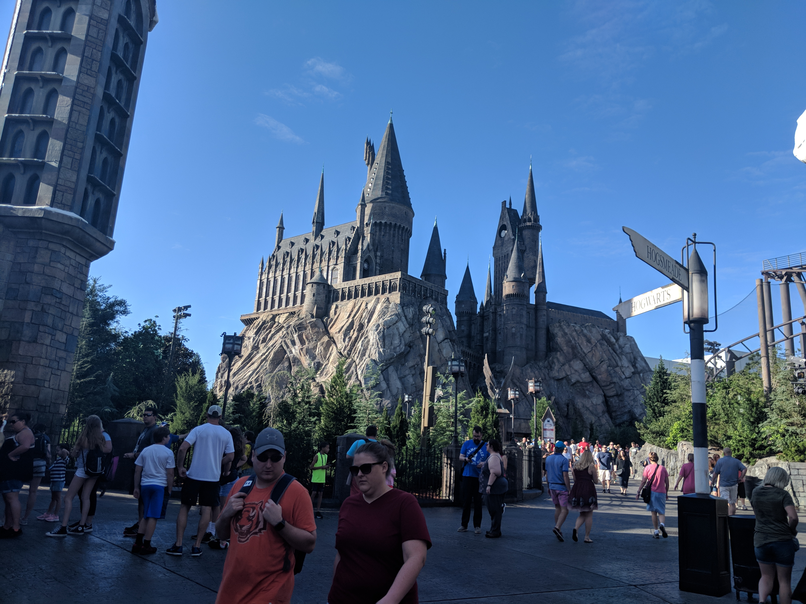
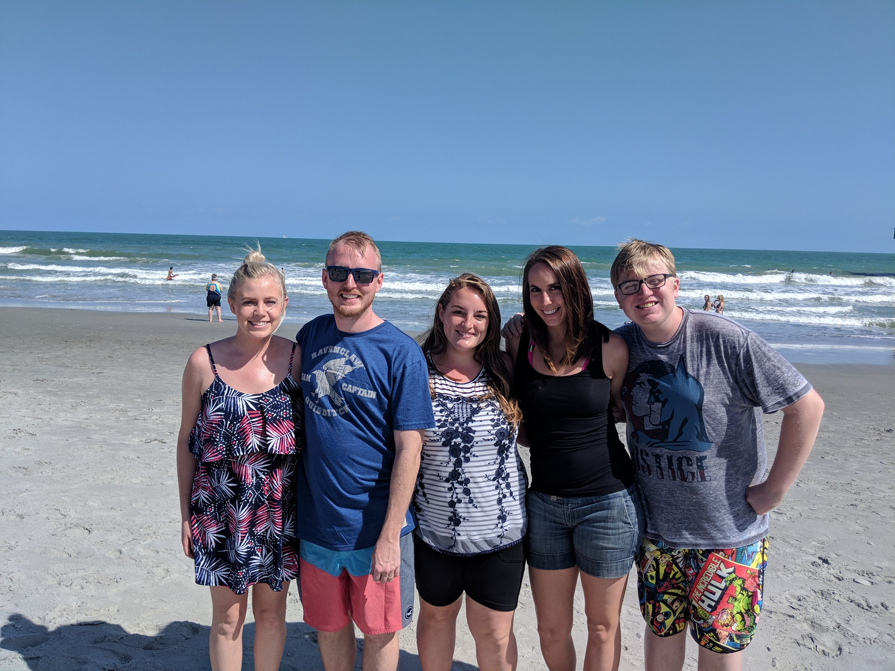

Leaving the muggle world & our baby
It was so hard to leave this little dog!
Universal Studios

We started our trip off with two days at Universal Studios. We bought wands, drank butterbeer, and explored the Wizarding World of Harry Potter.
Big News!

One of my favorite parts of our trip was taking a pregnancy announcement picture. We just found out we were expecting a few weeks prior to this.
NASA
My husband and I took our nephew to Kennedy Space Station on our third day. We got to see Saturn V which was so much larger than I ever imagined. We also took a tour of the area where we saw launchpads for NASA, SpaceX, and Blue Origin. Unfortunately we were a few days too early for their next launch.
Cocoa Beach
On our last day we went down to Cocoa Beach. It was the perfect day to relax and unwind from the busy past few days.